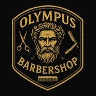
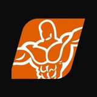

Nossos
exemplos
Toque em um botão para abrir um site real que a Vetor Digital criou.
Sites de clientes

Barbearia Olympus
Barbearia · agendamento pela página
↗
Matheus de Paula
Cantor · vídeo do show e orçamento
↗
Mega Star Energia Solar
Energia solar · calculadora de economia
↗

WR Studio Fitness
Academia · planos direto no WhatsApp
↗
Vetor Digital
Site oficial
Quem somos e como funciona
↗
Galeria Vetor Digital
Fotos dos nossos trabalhos
↗
Vídeos no Instagram
Nossa vitrine: @vetordigital.lp
↗
✓
Quero um site assim
Falar com a Vetor no WhatsApp
↗